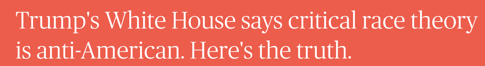
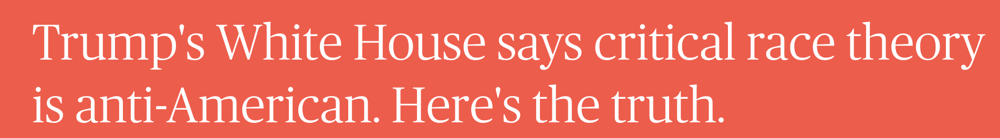

The Onus of Explanation
Forum for Information Professionals, February 12, 2021
Sam Popowich (he/him)
PhD Student, University of Birmingham, School of Government and Society
https://redlibrarian.github.io/onus_of_explanation/index.html

 


contrary to the fundamental premises underpinning our Republic: that all individuals are created equal and should be allowed an equal opportunity under the law to pursue happiness and prosper based on individual merit.


Arlington Bridge, Winnipeg Louis Riel, 1844-1885
Marx gives a specific meaning to ideology - he regards it as an unaware expression of the underlying ideas and beliefs which attach to a particular social situation, in contrast to the aware and critical exposition of ideas in their social context which is frequently called ideology in the west. (p.18)
The function, the very serious function of racism is distraction. It keeps you from doing your work. It keeps you explaining over and over again, your reason for being. Somebody says you have no language and you spend twenty years proving that you do. Somebody says your head isn’t shaped properly so you have scientists working on the fact that it is. Somebody says you have no art, so you dredge that up. Somebody says you have no kingdoms, so you dredge that up. None of this is necessary. There will always be one more thing.


Thank You.
Sam.Popowich@ualberta.ca
spopowich.ca
@redlibrarian